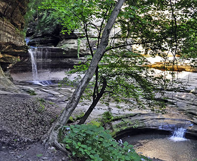
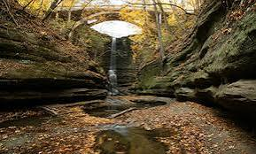

Why Oglesby?
Located in the Illinois River Valley
It is known for its natural beauty, outdoor recreational opportunities, and rich history. The town is home to several parks, including Starved Rock State Park, which is a popular destination for hiking, camping, and fishing. Oglesby also has a vibrant downtown area with local shops and restaurants, making it a great place to visit or live.
Things to do
- Hiking
- Camping
- Fishing
- Boating
- Wildlife Watching
Places to visit
- Starved Rock State Park
- Matthiessen State Park
- LaSalle Canyon
- Illinois River
- Historic Downtown Oglesby

Hiking Trails

Starved Rock
Known for its 18 sandstone canyons, seasonal waterfalls, and 13+ miles of trails carved by ancient glacial meltwater. The park sits along the Illinois River and offers bluff overlooks, forested paths, and canyon hikes that feel surprisingly rugged for central Illinois.
Address: 1000 Starved Rock Rd, Oglesby, IL 61351

Matthiessen
A few minutes south of Starved Rock, Matthiessen offers deep canyons, forest trails, waterfalls, and prairie areas. It’s slightly quieter than Starved Rock but just as beautiful, with excellent photo spots and varied terrain.
Address: 1000 Matthiessen Rd, Oglesby, IL 61351

LaSalle Canyon
If you want an additional distinct hike without leaving the area, LaSalle Canyon features a waterfall flowing directly into a large sandstone amphitheater, making it one of the most dramatic canyon hikes in the park.